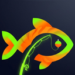

fishr AIPrivacy
fishr AI is a fishing log and forecasting app in public beta, built in New Brunswick, Canada. This page explains what the app collects, where it goes, and how to remove it. The short version: your fishing log stays on your phone unless you turn on fishr Cloud, and we only receive what you choose to send us.
What stays on your device
Unless you turn on fishr Cloud, your trips, catches, photos, spots, notes and settings are stored in your browser on your device. They are not sent to us. Backups you save from Settings are files on your device too. Deleting the app's data in Settings, or clearing your browser's site data, removes them.
fishr Cloud (optional)
If you switch Storage to Cloud in Settings, we store a copy of your log so you can use it on other devices: your trips (including GPS pins, spots, catches, lures, weather and notes), your notes, your settings (name, units, your saved town or approximate location, and any river gauges you picked, with the approximate area each is for), and your catch photos. You sign in with a passkey. Your face, fingerprint and device passcode never leave your device; we only receive a public key and a device label such as “iPhone · Safari”. No password, email address or phone number is collected.
Signing in sets one cookie that keeps you signed in on that device for up to a year. It's only used to recognize your account, never for tracking or ads.
Your cloud data is stored on Cloudflare's servers in eastern North America, which may be in the United States, and only you can read it. Photos are stored privately and are not public links. Delete cloud account in Settings erases your account, trips, notes, settings and photos from our servers right away; Cloudflare's automatic database recovery copies expire within 30 days. Trips on your devices stay there.
Ask fishr and Fish ID (optional)
These features use Claude, an AI model made by Anthropic. When you ask a question, we send Anthropic your question, your earlier questions in that conversation, the conditions on your Guide screen, and your fishing log from fishr Cloud (trips, catches, waters and spots by name, lures, weather and notes; not GPS coordinates). When you use Fish ID, we send that photo. Anthropic uses this only to produce the answer and does not train its models on it. We don't keep your questions, the answers or the photo; we only count how many you've used today.
Questions about the showcase season, and a few Fish IDs a day, don't need an account. To keep them to a few a day per visitor, we count them by a scrambled (hashed) form of your IP address, never the address itself, and delete the counts after a week.
Bite alerts (optional)
If you turn on bite alerts in Settings, we store what's needed to send them: the push address your browser or phone gives us (from Apple, Google, Mozilla or Microsoft, whose service delivers the notification), your approximate location (rounded to about 1 km) and town name if you set one, your time zone, and, if you use fishr Cloud, a link to your account so alerts can use your log. Our server asks Open-Meteo for the weather at that rounded location when an alert might be due. Notification text is encrypted so only your device can read it. Turning alerts off deletes all of this straight away; it's also deleted if the push service tells us the address no longer works.
Anonymous usage counts
To learn whether fishr is useful, the app reports a few milestones, each once per device: opened fishr, opened the showcase, logged a 1st, 3rd, 5th or 10th trip, unlocked the Guide, still logging 2 and 4 weeks after the first trip, turned on Cloud, used Ask fishr or Fish ID, and (at most once a week) logged a trip that week. We only keep a daily total for each milestone, such as “3 first trips on 12 October”. Nothing about your trips, catches, places, photos or name is sent, and there's no ID or cookie that could tell your device apart from anyone else's. To stop one visitor inflating the totals, reports are capped per day using the same scrambled (hashed) form of your IP address described above. You can turn usage counts off in Settings.
What reaches our servers, and why
| What | When | Why, and how long we keep it |
|---|---|---|
| A shared catch card (the image, species, size, lure, date, and the water name if you leave that on) | Only when you tap Share | So the link you send shows the catch. Anyone with the link can see it. Kept until you ask us to delete it. Exact spots and GPS are never included. |
| Your email address, optional first name, the date you joined and your consent | Only if you join the fishr Pro waitlist | To email you about fishr Pro. Kept until you unsubscribe or ask us to remove it. We never sell or share it. |
| Bite alerts: push address, location (about 1 km), town, time zone | Only if you turn on bite alerts | To check the forecast where you fish and send the alert. Deleted when you turn alerts off. Details |
| Anonymous usage milestones (no trip data, no ID) | The first time each milestone happens on your device, unless you turn it off in Settings | Daily totals only, to see whether fishr is useful. Details |
| Your approximate location (rounded to about 100 m) | When the app looks up the nearest river gauge | To find the gauge. Used for that request and not stored. |
| Crash reports: the error message, which file and line, your browser type, screen size and country | Only if the app hits an error | To fix bugs. No trips, photos, location or contact details are included. Deleted after 90 days. |
| Your fishing log, photos, settings and a passkey public key | Only if you turn on fishr Cloud | To back up and sync your log between your devices. Kept until you delete your cloud account in Settings. Details |
| Your question, your log and current conditions, or a fish photo | Only when you use Ask fishr or Fish ID | Sent to Anthropic to produce the answer, then discarded. We keep only a daily count. Details |
| Anonymous visit counts | When you open the app | Cloudflare Web Analytics, which uses no cookies and doesn't track you across sites. |
Services the app connects to
- Cloudflare hosts the app and stores fishr Cloud accounts, shared catches, the waitlist and crash reports.
- Anthropic runs the Claude AI model behind Ask fishr and Fish ID.
- Open-Meteo provides weather, pressure and forecasts. Your phone sends it approximate coordinates to get local weather, or the town name if you type one instead of sharing your location.
- Environment and Climate Change Canada (in Canada) and the U.S. Geological Survey (in the United States) provide river gauge data, fetched by our server.
- OpenStreetMap provides map tiles when you open the map.
- Google Fonts provides the app's typefaces.
Each of these receives your IP address when your phone talks to it, as with any website.
Emails
We only email people who ticked the consent box on the waitlist, and only about fishr Pro. Every email has a one-tap unsubscribe link, and we act on unsubscribes right away. This follows Canada's Anti-Spam Legislation (CASL).
Remove your email
Enter the address you joined with and we'll delete it from the waitlist.
Your rights
Under Canadian privacy law (PIPEDA) you can ask what we hold about you, ask us to correct it, or ask us to delete it, including a shared catch. You can delete a fishr Cloud account yourself in Settings. Use the form above for the waitlist. For anything else, contact us using the details below.
Children
fishr AI isn't directed at children under 13, and we don't knowingly collect their information.
Changes
If this policy changes, we'll update the date at the top. If a change affects how we use your email, we'll tell waitlist members before it takes effect.
Contact
Privacy questions and requests: privacy@fishr.monster. You can also remove your email yourself with the form above.